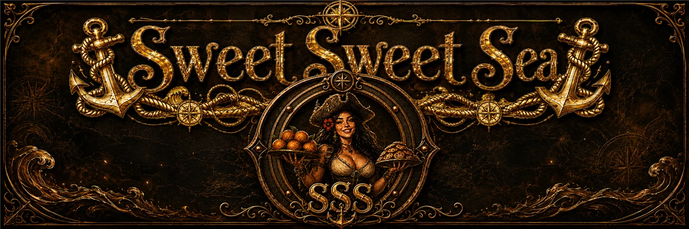

Pesca con forcejeoTug-of-war fishing
El carrete y la caña son tus gestos. RECOGE, SUELTA, JALA — el pez dicta y tú respondes. The reel and the rod are your gestures. REEL, GIVE LINE, PULL — the fish commands, you answer.

«El mar miente. Sus islas se deshacen en niebla,
y sus noches no siempre te dejan dormir.»
“The sea lies. Its islands dissolve into fog,
and its nights don't always let you sleep.”
Se abrirá con música. Baja el volumen si hace falta. It opens with music. Lower your volume if needed.
Android · PC (Windows) · Steam próximamente Android · PC (Windows) · Coming to Steam
Sus islas se deshacen en niebla, la fortuna de la adivina sentencia el clima y sus noches no siempre te dejan dormir. Its islands dissolve into fog, the fortune-teller's verdicts come true, and its nights don't always let you sleep.
Eres un marinero pobre en un muelle al fin del mundo. De día pescas, rebuscas la deriva, comercias con los vecinos y mejoras tu bote. De noche, el mar cobra: insomnios que se ganan a golpes, asedios de colosos de ojos violeta, y una travesía de tinta negra hacia una ciudad que no debería tener torres. You are a poor sailor on a pier at the end of the world. By day you fish, scavenge the drift, trade with the neighbors and upgrade your boat. By night the sea collects: sleepless sieges, violet-eyed colossi on the planks, and an ink-black crossing toward a city that shouldn't have towers.
El carrete y la caña son tus gestos. RECOGE, SUELTA, JALA — el pez dicta y tú respondes. The reel and the rod are your gestures. REEL, GIVE LINE, PULL — the fish commands, you answer.
La ballena, el calamar, la serpiente… cada una con su carácter. Aliméntalas, témplalas con tesoros y te escoltarán mar adentro. The whale, the squid, the serpent… each with its own character. Feed them, temper them with treasures, and they'll escort you.
Banco, astillero, cambista, la draga del Viejo, la adivina cuya fortuna se cumple, y vecinos con encargos. Bank, shipyard, trader, the Old Man's dredge, a fortune-teller whose verdicts come true, and neighbors with errands.
Calma chicha, niebla, tempestad. Fases de luna que siguen a la luna de verdad, estrellas fugaces y un faro que barre el agua. Dead calm, fog, tempest. Moon phases that follow the real moon, shooting stars and a lighthouse sweeping the water.
La noche, la niebla y lo que canta desde el agua te gastan la mente. Si se rompe, el mar se vuelve negro donde estés. Night, fog and what sings from the water wear your mind down. Break it, and the sea turns black wherever you are.
Tres llaves abren la Puerta Hundida. Cruzarla no termina el juego: lo vuelve más hondo. Bestias más bravas, marineros nuevos jugables. Three keys open the Sunken Gate. Crossing it doesn't end the game — it deepens it. Fiercer beasts, new playable sailors.


De día pescas, rebuscas y vendes. De noche decides si duermes o zarpas. By day you fish, scavenge and sell. By night you decide whether to sleep or sail.
Con la mente entera la zona buena es casi el doble de ancha. Con la mente rota, el mar te entrega cosas más raras. Pescar de noche paga mejor… y cobra en cordura. With a whole mind the good zone is nearly twice as wide. With a broken one, the sea hands you stranger things. Fishing at night pays better… and charges you in sanity.
 Sardina grisGrey sardine
5 oro · el pan de cada día5 gold · your daily bread
Sardina grisGrey sardine
5 oro · el pan de cada día5 gold · your daily bread
 Bacalao pálidoPale cod
9 oro · llena el estómago9 gold · fills the belly
Bacalao pálidoPale cod
9 oro · llena el estómago9 gold · fills the belly
 Anguila de nieblaFog eel
14 oro14 gold
Anguila de nieblaFog eel
14 oro14 gold
 Pez luminoso ★Glowfish ★
28 oro · comerlo reconforta28 gold · eating it comforts
Pez luminoso ★Glowfish ★
28 oro · comerlo reconforta28 gold · eating it comforts
 Pez esqueleto ★Skeleton fish ★
35 oro · solo de noche · perturbador35 gold · night only · unsettling
Pez esqueleto ★Skeleton fish ★
35 oro · solo de noche · perturbador35 gold · night only · unsettling
 Pez Campana ★Bell fish ★
60 oro · tañe… y desata una tormenta60 gold · it tolls… and unleashes a storm
Pez Campana ★Bell fish ★
60 oro · tañe… y desata una tormenta60 gold · it tolls… and unleashes a storm
 Botella con mapa ★Bottled map ★
revela un tesoro ahí fuerareveals a treasure out there
Botella con mapa ★Bottled map ★
revela un tesoro ahí fuerareveals a treasure out there
 Llave oxidada ★Rusted key ★
tres abren la Puerta Hundidathree open the Sunken Gate
Llave oxidada ★Rusted key ★
tres abren la Puerta Hundidathree open the Sunken Gate


Cada golpe cuesta media ración de comida: aporrear el clic vacía el estómago, y en ayunas pegas más flojo. Cada bestia nace con sus estrellas y su talla, y las estrellas se degradan si te golpea o si el duelo se alarga: mata rápido y limpio, o cobra menos. Every blow costs half a ration: mashing the button empties your belly, and on an empty stomach you hit softer. Each beast is born with its own stars and size, and the stars degrade if it hits you or the duel drags on: kill fast and clean, or get paid less.
De noche y sin lámpara, lo que se acerca es una silueta negra sin nombre hasta que la tienes a once metros — y pega más fuerte y corre más. Solo la luz dice la verdad… y a veces ni la luz: hay siluetas que, al revelarse, no son lo que parecían. At night without a lamp, what approaches is a nameless black silhouette until it's eleven metres away — and it hits harder and moves faster. Only light tells the truth… and sometimes not even light: some silhouettes, once revealed, are not what they seemed.
Fabrica una caña de captura, hiérela primero y lánzale el lazo. La caña siempre se rompe; si aguanta, la bestia se queda a vivir en el agua de tu muelle. Caben tres, o cinco si amplías el establo. Todo lo que nada se puede domar: cada especie pide su nivel de caña y su cebo favorito. Craft a catching rod, wound it first and throw the lasso. The rod always breaks; if it holds, the beast stays in the water by your pier. Three fit, or five if you extend the pen. Everything that swims can be tamed: each species asks for its rod level and its favourite bait.
Lo que domas defiende el muelle de noche, te escolta mar adentro y te deja regalos al alba. Y lo que nace en el nido hereda estrellas, talla, temple y mutaciones — ahí empieza la crianza. What you tame defends the pier at night, escorts you out to sea and leaves you gifts at dawn. And what hatches in the nest inherits stars, size, temper and mutations — that's where breeding begins.
Cada criatura tiene un poder propio… y ese poder crece con cada vuelta que das a la Puerta. Every creature has a power of its own… and that power grows with every loop through the Gate.


No tiene un color: los tiene todos. Cruza dos bestias de la misma especie, amaestradas y sin hambre, y el nido de la caja de peces te dejará un huevo. La cría hereda estrellas, talla, temple y mutaciones… y una de cada sesenta y cuatro nace así. It has no colour: it has all of them. Breed two tamed, well-fed beasts of the same species and the nest in the fish crate will leave you an egg. The calf inherits stars, size, temper and mutations… and one in sixty-four is born like this.
todos los colores · oro ×4 · una ★ extra all colours · gold ×4 · one extra ★
De día el mar te da de comer. De noche, cobra. By day the sea feeds you. By night, it collects.
Puedes dormir desde las nueve… si el mar te deja. La luna sigue las ocho fases de la luna de verdad, y cada noche del calendario tiene su carácter. You can sleep from nine… if the sea lets you. The moon follows the eight phases of the real moon, and every night on the calendar has its own character.
Hay noches que no te dejan cerrar los ojos: algo camina por los tablones y el descanso hay que ganárselo a golpes. La noche siempre nombra su causa — ningún castigo llega sin decir de dónde viene. Some nights won't let you close your eyes: something walks the planks and rest has to be won by force. The night always names its cause — no punishment arrives without saying where it came from.
 El asedioThe siege
El asedioThe siege
Cuando el muelle es asediado, sube algo que no cabe en tu bote. Tiene escudo, trae oleadas y los tambores de guerra no paran hasta que uno de los dos se hunda. Tus bestias amaestradas salen a defender contigo. When the pier is besieged, something surfaces that wouldn't fit in your boat. It has a shield, it brings waves, and the war drums don't stop until one of you sinks. Your tamed beasts come out to defend it with you.
Si la cordura se rompe, el mar se vuelve de tinta donde estés. Al fondo hay una ciudad que no debería tener torres. Se llega por tramos, y cada tramo cobra su peaje. If your sanity breaks, the sea turns to ink wherever you are. At the far end there's a city that shouldn't have towers. You get there in stretches, and every stretch takes its toll.
Cada temporada dura veinticuatro días y trae cuatro noches que no son como las demás. Todas regalan algo y cobran algo… y una jamás se anuncia: se descubre zarpando. Each season lasts twenty-four days and brings four nights unlike the others. They all give something and charge something… and one is never announced: you find it out by sailing into it.
No todo lo que trae la noche viene a cobrarte. Una vez por temporada el muelle se echa a la calle. Not everything the night brings comes to collect. Once a season the pier spills into the street.
Algunos amaneceres el mar entero cambia de color. Some dawns the whole sea changes colour.
El fondo de esta página son esas mareas, con sus colores de verdad — los mismos que el juego le da al agua. Espera un poco y las verás pasar. The background of this page is those tides, in their real colours — the very ones the game gives the water. Wait a little and you'll see them pass.
La versión de PC llega a Steam con 30 logros y guardado en la nube. Estamos preparando la ficha; en cuanto esté arriba, podrás añadirlo a tu lista de deseados. The PC version is coming to Steam with 30 achievements and cloud saves. The store page is in the works; as soon as it's up you'll be able to wishlist it.
Ficha en preparaciónStore page in progressEl juego entero: días sin límite, todas las ranuras de partida, los cuatro marineros y el vínculo con la versión de PC por WiFi. The whole game: unlimited days, all save slots, the four sailors and the WiFi link with the PC version.
Google PlayDiez días de mar, una ranura de partida y El Pescador. Sin anuncios y sin compras: es una prueba honesta, no un cepo. Ten days at sea, one save slot and The Fisherman. No ads, no purchases: an honest demo, not a trap.
Probar gratisPlay for freeSin anuncios. Sin compras dentro del juego. Sin cuentas. Sin recolección de datos — y aquí está la política que lo dice. No ads. No in-app purchases. No accounts. No data collection — and here's the policy that says so.
Todavía no hay lista de correo: no recogemos datos de nadie. Cuando la ficha de Steam esté publicada, este hueco tendrá el botón de lista de deseados. Mientras tanto, escríbenos. There's no mailing list yet: we collect nobody's data. Once the Steam page is live, this spot will hold the wishlist button. In the meantime, write to us.